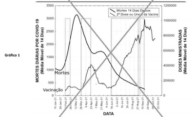
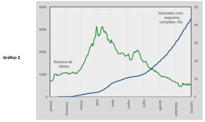
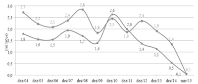
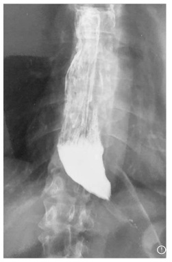
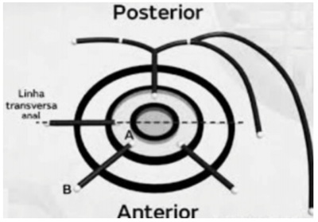
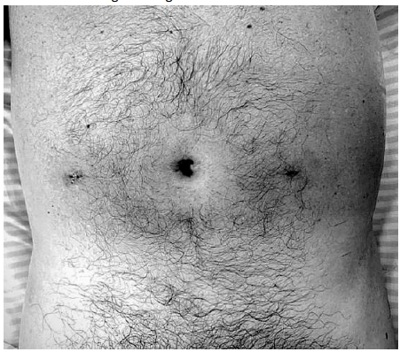
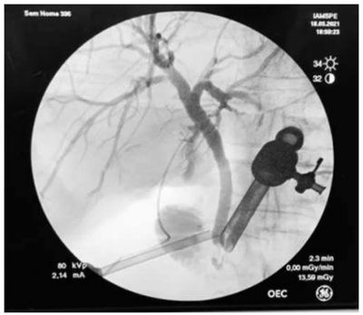
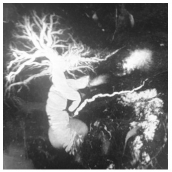
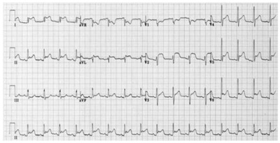
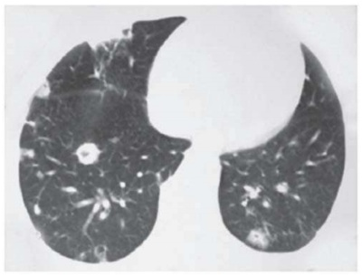

Questão 1 · Pediatria · Programa Nacional de Imunizações · Calendário dos adolescentes · 4000169454Um pai acompanhou seu lho, de doze anos de idade, em consulta de rotina na UBS. Ao checar a carteira vacinal, o médico da UBS notou que a última vacina recebida foi a de quatro anos de idade. Com base nesse caso hipotético, assinale a alternativa que apresenta a conduta adequada.
A O paciente deverá receber apenas a 1ª dose da vacina HPV.
B O paciente deverá receber a 1ª dose da vacina HPV e a dose da meningocócica ACWY imediatamente.
C O paciente deverá receber a 1ª dose da vacina HPV imediatamente e a meningocócica ACWY em um mês.
D O paciente deverá receber um reforço da SCR e a meningocócica ACWY imediatamente e a 1ª dose da vacina HPV em um mês.
E O paciente deverá receber a 1ª dose da vacina HPV e um reforço da SCR imediatamente e a meningocócica ACWY em um mês.
Questão 2 · Sigilo prof issional em crianças e adolescentes Parecer CFM n 25 de 2013 · 4000169453Assinale a alternativa que apresenta uma situação que autoriza o médico à quebra do sigilo profissional.
A CCF, de catorze anos de idade, sexo feminino, que relata, em consulta médica, que, durante o fim de semana, na casa de amigos, experimentou maconha pela primeira vez
B FAP, de treze anos de idade, sexo feminino, que, em consulta, relata atraso menstrual e, após a realização de teste para gravidez, obtém resultado positivo
C AAG, de quinze anos de idade, sexo feminino, que solicita a prescrição de anticoncepcional oral, uma vez que vem mantendo relações sexuais regulares com seu namorado de dezoito anos de idade, sem o conhecimento dos pais
D BBD, de dezessete anos de idade, sexo masculino, que apresenta secreção uretral abundante e disúria, sugestivas de uretrite gonocócica
E GR, de quinze anos de idade, sexo feminino, que solicita prescrição de contraceptivo de emergência após relação sexual desprotegida no dia anterior à consulta
Questão 3 · Medicina Preventiva · 4000169452Em uma maternidade, foi realizado um parto vaginal no qual o recém-nascido (de 1.550 g) morreu após vinte minutos do nascimento. Com base nesse caso hipotético, é correto afirmar que o óbito é considerado como
A aborto precoce.
B aborto tardio.
C óbito não fetal.
D óbito fetal.
E natimorto.
Questão 4 · Sistemas de Inf ormação em Saúde SIS e Bases de dados do SUS · 4000169451Acerca dos sistemas de informações de saúde do Brasil, assinale a alternativa correta.
A O Sistema de Informação de Agravos de Notificação (Sinan) tem como objetivo coletar, transmitir e disseminar dados gerados sobre as doenças de notificação compulsória.
B O Sistema de Vigilância de Agravos aos Povos Nativos (Sisvan) recruta informações, na perspectiva do Sistema de Vigilância em Saúde, voltadas para a população indígena.
C A Comissão Permanente Mista de Combate à Violência contra a Mulher (CMCVM) é um sistema nacional de notificação de casos de violência doméstica.
D O Sistema de Notificação de Agravos à Saúde dos Trabalhadores Camponeses (SINASC) tem como objetivo coletar, transmitir e disseminar dados gerados sobre as doenças relevantes na população rural brasileira.
E O Registro de Eventos em Saúde Pública (RESP-Trans) tem como objetivo coletar, transmitir e disseminar dados gerados sobre as comorbidades da população transgênero nas grandes cidades brasileiras.
Questão 5 · Princípios e Diretrizes do Sistema Único de Saúde SUS · 4000169450O princípio do Sistema Único de Saúde que possibilita que o atendimento a um cidadão com neoplasia de pênis seja priorizado em relação a outro que gostaria de realizar inserção de prótese peniana eletiva é o do(da)
A equidade.
B controle social.
C universalidade.
D integralidade.
E hierarquização.
Questão 6 · Direitos dos médicos · 4000169449Um médico foi convocado pelo Conselho Regional de Medicina para prestar esclarecimentos sobre a denúncia de que estava prescrevendo, entre maio em agosto de 2021, um “kit covid” (azitromicina, cloroquina, ivermectina, vitamina D e zinco) a todos os pacientes atendidos com suspeita ou confirmação laboratorial de covid-19. O médico relata que assim o fez por orientação de seus gestores, não médicos, e que tinha medo de perder o emprego. Diz, ainda, que, apesar de assinar a receita que prescrevia o “kit covid”, verbalmente orientava a ingestão apenas das vitaminas, principalmente nos casos mais leves. Com base nesse caso hipotético, assinale alternativa que apresenta capítulo do Código de Ética Médica (2019) que não colabora com a argumentação de defesa do médico à “orientação” de seus colegas gestores.
A Capítulo I, VII – O médico exercerá sua profissão com autonomia, não sendo obrigado a prestar serviços que contrariem os ditames de sua consciência ou a quem não deseje, excetuadas as situações de ausência de outro médico, em caso de urgência ou emergência, ou quando sua recusa possa trazer danos à saúde do paciente.
B Capítulo I, VIII – O médico não pode, em nenhuma circunstância ou sob nenhum pretexto, renunciar à sua liberdade profissional nem permitir quaisquer restrições ou imposições que possam prejudicar a eficiência e a correção de seu trabalho.
C Capítulo I, XVI – Nenhuma disposição estatutária ou regimental de hospital ou de instituição, pública ou privada, limitará a escolha, pelo médico, dos meios cientificamente reconhecidos a serem praticados para estabelecer o diagnóstico e executar o tratamento, salvo quando em benefício do paciente.
D Capítulo IV, Parágrafo único. O médico deve ter para com seus colegas respeito, consideração e solidariedade.
E Capítulo VII – É vedado ao médico: Art. 52. Desrespeitar a prescrição ou o tratamento de paciente determinados por outro médico, mesmo quando em função de chefia ou de auditoria, salvo em situação de indiscutível benefício para o paciente, devendo comunicar imediatamente o fato ao médico responsável.
Questão 7 · Outros erros e vieses · 4000169448Em uma publicação do consequências importantes para os pacientes. Nos Estados Unidos, os hospitais recebem credenciamento por meio de inspeções surpresa no local, feitas pela TJC ( demonstrar conformidade com as melhorespráticas. Para avaliar se essa vigilância aumentada está associada a um desfecho melhor para o paciente, em comparação com períodos sem acompanhamento, pesquisadores realizaram uma análise observacional de 1.984 inspeções surpresa realizadas pela TJC em hospitais americanos. Os dados foram recolhidos entre os anos de 2008 e 2012, no período de três semanas antes a três semanas após as inspeções. O desfecho primário foi a mortalidade em trinta dias e os secundários foram a taxa de infecções por difficile estudo incluiu 244.787 e 1.462.339 admissões durante as semanas com e sem inspeções, respectivamente, com características semelhantes entre pacientes, razão para a admissão e procedimentos intra-hospitalares em ambos os grupos. Em geral, verificou-se uma diminuição significativa na taxa de mortalidade em trinta dias nas admissões durante as inspeções (7,03%) versus nas semanas sem acompanhamento (7,21%) intervalo de con ança (IC) de 95%. Pelos resultados, os pesquisadores concluíram que doentes admitidos nos hospitais durante as semanas de inspeção têm significativamente menor mortalidade, especialmente em hospitais universitários. Internet: <https://pebmed.com.br>. Assinale a alternativa que mais bem explica o que foi descrito no texto acima.
A O efeito Hawthorne, fenômeno segundo o qual estudantes de diferentes graduações e residências médicas e enfermagem obtêm melhor desempenho devido à motivação para a inserção no mercado de trabalho, explica o ocorrido.
B O efeito Hawthorne, fenômeno segundo o qual os indivíduos mudam ativamente seu comportamento quando sabem que estão sendo observados e monitorados, explica o ocorrido.
C Os hospitais universitários apresentam melhor desempenho, devido à melhor formação (mestrado e doutorado) dos seus profissionais.
D Os hospitais universitários apresentam melhor desempenho, pois recebem maiores recursos financeiros para o desempenho das atividades assistenciais e educativas.
E Os hospitais universitários apresentam melhor desempenho, pois, em geral, apresentam profissionais advindos de concursos públicos, portanto mais bem formados e mais motivados.
Questão 8 · Medicina Preventiva · 4000169447Internet: <https://portal.fiocruz.br/observatorio-covid-19>. O gráfico 1 mostra duas curvas, uma que corresponde ao número de óbitos por covid-19 no Brasil e outra que apresenta a evolução da vacinação em massa. Esse gráfico foi compartilhado mais de mil vezes nas redes sociais desde 3 de novembro de 2021. O gráfico 2 mostra o número de óbitos e a proporção da população vacinada, com esquema completo, ao longo de 2021. A partir dos gráficos acima, assinale a alternativa incorreta.


A A imunidade natural não explicou a queda nos números em lugar algum do mundo até hoje, no caso da covid-19.
B A queda do número de óbitos pode ocorrer antes da aplicação massiva dos imunizantes porque a epidemia naturalmente tem um comportamento em ondas.
C Pelos gráficos, é possível notar que a queda na mortalidade inicia bem antes de uma cobertura vacinal relevante, provavelmente pelo enorme peso da imunidade natural dos curados.
D Uma das evidências do efeito da vacinação na queda do número de óbitos, é justamente o fato de o Brasil não ter registrado uma nova explosão de mortes, mesmo diante da chegada da variante delta, detectada pela primeira vez no País em maio de 2021.
E Desde o início da pandemia, o Brasil já tinha atravessado outros picos, nos quais também se observaram quedas no número de óbitos, seguidas por novas escaladas.
Questão 9 · Saúde Suplementar · 4000169446A saúde suplementar no Brasil é a atividade que envolve a operação de planos e seguros privados de assistência médica à saúde, referidos simplesmente como planos ou seguros de saúde. Essa operação é regulada pelo poder público, representado pela Agência Nacional de Saúde Suplementar (ANS), e pelas operadoras, que compreendem seguradoras especializadas em saúde, medicinas de grupo, cooperativas, instituições lantrópicas e autogestões. O gráfico acima mostra a variação, entre 2004 e 2015, de dois importantes parâmetros relacionados à saúde suplementar no Brasil. Sendo assim, assinale a alternativa que apresenta esses parâmetros.

A lucro do setor de saúde suplementar e crescimento da população brasileira
B lucro do setor de saúde suplementar e investimento no Sistema Único de Saúde
C variação de emprego formal e valorização do dólar
D variação de emprego formal e variação de beneficiários dos planos de saúde suplementar
E desemprego e número de usuários exclusivamente dependentes do Sistema Único de Saúde
Questão 10 · Medicina Preventiva · Prevenção Quaternária · 4000169445O termo prevenção quaternária (P4) foi utilizado pela primeira vez em uma conferência da Organização Mundial de Médicos de Família (WONCA), em 1995, por Marc Jamoulle. Após quatro anos, essa definição foi adotada e publicada, no dicionário WONCA, da seguinte forma: “ação feita para identi car uma pessoa ou população em risco de supermedicalização, para protegê-los de uma intervenção médica invasiva e sugerir procedimentos cientí ca e eticamente aceitáveis”. Comumente, utiliza-se o diagrama cartesiano que contrapõe o ponto de vista médico com o ponto de vista do paciente, ou seja, as dicotomias entre a existência ou não de doença e a presença ou não de sintomas desagradáveis (disease versus illness), obtendo-se, assim, quatro quadrantes, como mostra a figura abaixo. O quadrante que representa as situações com maior risco de excessos e problemas advindos de intervenções médicas, ou seja, quando a prevenção quaternária se faz mais importante, é o quadrante
A A.
B B.
C C.
D D.
E que engloba tanto o A quanto o B.
Revisar: possível letra faltando em enunciado
Questão 11 · Rastreamento · Medicina Baseada em Evidências · Estudos Epidemiológicos · 4000169444A tabela acima resume os resultados do estudo o f Systematic com cinquenta anos de idade ou mais. Acompanhadas por, aproximadamente, onze anos, mil mulheres zeram mamografia e mil mulheres não fizeram o rastreamento. Com base nessas informações e na tabela, assinale a alternativa correta.
A A mamografia como rastreamento de câncer de mama não apresenta benefício, pois praticamente nãomudou a mortalidade por câncer de mama.
B Toda intervenção médica tem riscos. Mesmo as intervenções que pretendem amenizá-lo não reduzem o risco a zero.
C Apesar do benefício na diminuição da mortalidade por câncer de mama ter sido pequeno, a mamografia tem a vantagem de ser um exame barato, rápido e sem efeitos colaterais indesejáveis.
D A ressonância nuclear magnética deve ser o exame de escolha para o rastreio do câncer de mama.
E Os dados apresentados não são confiáveis, pois as revisões Cochrane apresentam qualidade técnica apenas de grau moderado.
Questão 12 · NNT · 4000169443O artigo cientí co T revista Nature, de 2017, mostra a importância da abordagem terapêutica do tabagismo, em comparação com as práticas tradicionais dos serviços de saúde, e usa o conceito de NNT (número necessário para tratar). Medicações usadas n a cessação do tabagismo são prescritas usualmente por três a seis meses, enquanto estatinas e anti-hipertensivos podem ser prescritos por toda a vida. As três medicações antitabagismo foram, nesse estudo, prescritas conjuntamente, com suporte de técnicas psicocomportamentais. Considerando o quadro acima apresentado, assinale a alternativa correta.
A Para a cessação do tabagismo, a bupropiona é sempre mais efetiva, em todos os pacientes, que a reposição definicotina.
B Para prevenir um óbito por AVC ou IAM por um ano ou mais, é necessário tratar 107 indivíduos com medicação anti-hipertensiva.
C O rastreamento de câncer de colo uterino é pouco efetivo, uma vez que é necessário se fazer 1.140 exames para ajudar apenas uma pessoa.
D O tratamento com anti-hipertensivos ajuda, de maneira significativa, setecentas pessoas, enquanto a vareneclina ajuda apenas entre dez e vinte pessoas.
E Deve-se deslocar parte dos esforços tradicionalmente empenhados no tratamento medicamentoso da hipertensão de grau leve para o apoio, inclusive medicamentoso, na cessação do tabagismo.
Revisar: possível letra faltando em enunciado
Questão 13 · Atestado médico Resolução CFM n 16582002 · 4000169442Frequentemente, os médicos são procurados para que forneçam atestados médicos para a prática de esportes. Com relação a esse assunto, assinale a alternativa correta.
A Os atestados médicos para esse fim devem ser emitidos por um médico especialista (medicina desportiva, ortopedia ou cardiologia).
B Raramente são necessários exames complementares na emissão do atestado médico para a realização de atividade física.
C Devem conter o código da CID-10.
D Podem ser entregues a terceiros, como, por exemplo, ao pai ou à mãe.
E Se o paciente tiver mais de quarenta anos de idade e for obeso, tornar-se-á fundamental a realização prévia de teste ergométrico.
Questão 14 · Indicadores especiais de mortalidade · 4000169441O gráfico acima mostra as tendências nas taxas de mortalidade por doenças cardiovasculares (DCV), doenças isquêmicas do coração (DIC), doenças cerebrovasculares (DCbV) e câncer, no Brasil, entre 1996 e 2017. Sendo assim, assinale a alternativa que associa corretamente as quatro curvas (A, B, C e D) com as causas de morte.

A A – câncer, B – DCV, C – DIC, D – DCbV
B A – DCbV, B – câncer, C – DCV, D – DIC
C A – DIC, B – câncer, C – DCV, D – DCbV
D A – DCV, B – câncer, C – DIC, D – DCbV
E A – DCV, B – DIC, C – câncer, D – DCbV
Questão 15 · Medicina Preventiva · 4000169440A integralidade re ete o leque de serviços que o serviço de saúde deve oferecer para que os usuários recebam atenção integral de acordo com suas necessidades, sejam elas físicas ou psíquicas. Inclui então a promoção de saúde e a prevenção de doenças. O termo originalmente utilizado por Star eld, abrangente. Entretanto, no Brasil, predomina o termo integral. A primeira edição brasileira de Star eld (2002) inicialmente traduz carrega, no Brasil, o significado de
A acesso ao sistema de saúde suplementar, que é fundamental para que todo brasileiro seja atendido de forma integral.
B olhar para o usuário do sistema de saúde como um todo, e não apenas como um conjunto de queixas e doenças, o que inclui aspectos biológicos, psicológicos e sociais.
C serviço de atenção primária, secundária e, por vezes, terciária, que devem trabalhar juntas para que a integralidade realmente aconteça.
D determinante social de saúde, que é primordial na realização de um atendimento integral em saúde.
E integralidade, que significa, além do tratamento de doenças, prevenção, promoção da saúde e reabilitação.
Questão 16 · Sistemas de Saúde e Modelos Assistenciais de Saúde · 4000169439Conforme a primeira versão da Política Nacional da Atenção Básica (PNAB), de 2006, a atenção básica à saúde caracteriza-se por um conjunto de ações de saúde, no âmbito individual e coletivo, que abrangem a promoção e a pro teção da saúde, a prevenção de agravos, o diagnóstico, o tratamento, a reabilitação e a manutenção da saúde, desenvolvendo-se por meio do exercício de práticas gerenciais e sanitárias democráticas e participativas, sob forma de trabalho em equipe, dirigidas a populações de territórios bem delimitados, pelas quais assume a responsabilidade sanitária, considerando a dinamicidade existente no território em que vivem essas populações, utilizando tecnologias de elevada complexidade e baixa densidade, que devem resolver os problemas de saúde de maior frequência e relevância em seu território, sendo o contato preferencial dos usuários com os sistemas de saúde e orientando-se pelos princípios da universalidade, da acessibilidade e da coordenação do cuidado, do vínculo e da continuidade, da integralidade, da responsabilização, da humanização, da equidade e da participação social. No Brasil, optou-se pelo uso o cial do termo atenção básica à saúde (ABS), no lugar de atenção primária à saúde (APS), porque
A o modelo de APS praticado na Europa baseava-se essencialmente no trabalho de médicos de família e enfermeiros, principalmente em pequenos consultórios privados.
B o modelo que inspirou a ABS era o soviético, de Semasko, fundamentado nas especialidades médicas ditas tradicionais (pediatria, gineco-obstetrícia e clínica geral).
C pretendeu evitar o modelo de “APS seletiva”, que era orientado apenas por um número limitado de serviços dedicados às populações mais vulneráveis.
D os atributos da APS são diferentes dos princípios descritos na definição de ABS da PNAB de 2016 (universalidade, acessibilidade, coordenação do cuidado, vínculo e continuidade, integralidade, responsabilização, humanização, equidade e participação social).
E acreditava-se, na época, que o modelo a ser seguido não era o europeu, mas o cubano, posteriormente aplicado no Programa Mais Médicos.
Questão 17 · Clínica Médica · Hepatite C · Hepatologia · 4000169438Com base nos critérios definidos pelo Protocolo brasileiro para infecções sexualmente transmissíveis de 2020: hepatites virais, que contempla as atuais diretrizes do Ministério da Saúde para a assistência de gestantes com hepatites, assinale a alternativa correta.
A A transmissão vertical da hepatite B é influenciada pela carga viral e pela positividade do antígeno e da hepatite B (HBeAg) no momento do parto.
B A informação vacinal prévia exclui a necessidade de verificação se a gestante for portadora de hepatite B durante o acompanhamento pré-natal.
C O risco de transmissão vertical da hepatite B é maior quando a infecção é adquirida no primeiro trimestre, pois a transmissão via placentária é frequente.
D Em 2020, o Ministério da Saúde incorporou o rastreamento universal da hepatite A em gestantes durante o pré- natal, medida que deve ser estimulada.
E Para as pacientes suscetíveis, a vacinação contra o vírus da hepatite C deve ser realizada durante a gestação.
Questão 18 · Métodos de indução do parto · Obstetrícia · 4000169437Uma primigesta, com idade gestacional de quarenta semanas, desejosa de parto vaginal, decide, conjuntamente com a equipe médica, pela indução do parto. Com essa nalidade, as características do colo uterino foram avaliadas, conforme o índice de Bishop (1964), que atribui uma pontuação de valor prognóstico para o êxito da indução. Com base nesse caso hipotético, assinale a alternativa correta.
A As prostaglandinas E1 (misoprostol) ou E2 (dinoprostona) podem ser utilizadas concomitantemente com a ocitocina e apresentam excelente efeito sinérgico.
B O pessário vaginal de prostaglandina E2 (dinoprostona) deve ser removido em caso de hipertonia uterina ou taquissistolia.
C A amniotomia, sempre que possível, deve ser realizada antes da administração das prostaglandinas E1 (misoprostol) ou E2 (dinoprostona), via vaginal.
D A prostaglandina E2 (dinoprostona) deve ser inserida, via vaginal, após o uso da prostaglandina E1 (misoprostol) quando o colo apresentar índice de Bishop maior que 6.
E A ocitocina deve ser utilizada quando o processo de maturação cervical tiver ocorrido de forma efetiva, ou seja, quando o índice de Bishop for menor ou igual a 3.
Questão 19 · Obstetrícia · Gestação múltipla gestação gemelar · 4000169436Uma gestante de 26 anos de idade compareceu à consulta pré-natal na seção de obstetrícia do Hospital do Servidor Público Estadual (HSPE), levando consigo exame ultrassonográ co, que revelava a presença de dois fetos, co m comprimento cabeça-nádegas (CCNs) sugestivo de gestação gemelar de onze semanas, e evidenciava o sinal de lambda. Com base nesse caso hipotético, é correto afirmar que
A existe alto risco de feto acárdico.
B há alto risco de síndrome de transfusão feto-fetal.
C se trata de gravidez gemelar dizigótica.
D a clivagem do zigoto, caso a gestação gemelar seja monozigótica, provavelmente ocorreu entre o 8º e o 10º dia após a fecundação.
E a clivagem do zigoto, caso a gestação gemelar seja monozigótica, provavelmente ocorreu entre o 1º e o 3º dia após a fecundação.
Revisar: possível letra faltando em enunciado
Questão 20 · Dieta · Atividade f ísica · 4000169435Uma paciente de 37 anos de idade, primigesta, com idade gestacional de 29 semanas e diabetes mellitus gestacional diagnosticada por alterações no teste oral de tolerância à glicose (TOTG 75 g), retorna à consulta pré-natal com os seguintes valores diários de glicemia capilar (dextro) domiciliar. Realiza dieta orientada por nutricionista e faz exercícios regularmente há quinze dias. Com base nas diretrizes do artigo americana da Saúde, do Ministério da Saúde, da Federação Brasileira das Associações de Ginecologia e Obstetrícia e da Sociedade Brasileira de Diabetes (2019), é correto afirmar que a conduta adequada nesse caso hipotético é

A prescrever hipoglicemiante oral (metformina), em associação com a dieta e a atividade física regular.
B acrescentar suplementos dietéticos noturnos, pois as glicemias capilares de jejum sugerem ocorrência de hipoglicemias.
C manter as orientações dietéticas e a atividade física regular.
D a insulinoterapia, em associação com a dieta e a atividade física regular.
E a insulinoterapia, em associação com o hipoglicemiante oral (metformina), a atividade física regular e a dieta.
Questão 21 · Parto vaginal operatório · Obstetrícia · Parto · 4000169434Segundo os princípios básicos da aplicação do fórcipe, a dupla pega de Scanzoni poderá ser necessária nas apresentações
A cefálicas, variedades transversas, para as rotações de 90⁰ com fórcipe de Kielland.
B cefálicas, variedades anteriores oblíquas, para as rotações de 45⁰ com fórcipe de Simpson.
C pélvicas, modo de nádegas (agripina), para as rotações de 45⁰ com fórcipe de Piper.
D cefálicas, variedades posteriores oblíquas, para as rotações de 135⁰ com fórcipe de Simpson.
E cefálicas, variedades anteriores oblíquas, para as rotações de 135⁰ com fórcipe de Piper.
Questão 22 · Introdução à púrpura trombocitopênica imunológica PTI · 4000169433Quando uma paciente com púrpura trombocitopênica imune primária ou púrpura trombocitopênica idiopática ( P TI ) engravida, deverá ser esclarecida sobre alguns aspectos da sua doença. Acerca desse assunto, assinale a alternativa correta.
A Trata-se de doença que envolve anticorpos antiplaquetários da classe IgM que não ultrapassam a placenta e, portanto, não impõem riscos ao feto.
B A esplenectomia durante a gestação pode ser necessária como forma de tratamento, pois melhora os níveis das plaquetas maternas, além de diminuir os anticorpos circulantes, o que evita o acometimento fetal.
C Os anticorpos antiplaquetários da classe IgG envolvidos são capazes de cruzar a membrana placentária, podendo causar trombocitopenia fetal autoimune, petéquias neonatais e até hemorragia intraventricular.
D A administração intravenosa de imunoglobulina é contraindicada durante a gestação, pois pode aumentar o risco de plaquetopenia neonatal.
E Transfusões seriadas de plaquetas durante a gravidez são necessárias para se evitar a ocorrência de hemorragia intraventricular neonatal.
Questão 23 · Sangramento segunda metade da gestação · Obstetrícia · 4000169432Uma gestante de quarenta anos de idade, G5P3A1, estava em fase ativa de trabalho de parto induzido, caracterizado por cinco contrações de 40 segundos em 10 minutos, batimentos cardíacos fetais de 148 bpm e, ao toque, apresentação cefálica, no plano zero de De Lee, bolsa amniótica rota e colo com 8 cm de dilatação. Subitamente, referiu dor escapular intensa, acompanhada de interrupção da contratilidade uterina. Foi examinada novamente e, ao toque vaginal, observou-se apresentação cefálica alta e móvel e sangramento vaginal discreto. Ao exame físico: frequência cardíaca de 130 bpm; e pressão arterial de 80 x 40 mmHg. Trata-se de um caso de
A descolamento prematuro da placenta, com a presença do sinal de Bandl.
B rotura de vasa prévia, com a presença do sinal de Clark.
C rotura uterina, com a presença do sinal de Hastings.
D rotura uterina, com a presença do sinal de Laffont.
E rotura do seio marginal, com a presença do sinal de Frommel.
Questão 24 · Sif ilis na gestação · Obstetrícia · 4000169431Nos últimos anos, a ocorrência de sí lis na gestação vem preocupando os pro ssionais da área da saúde. Quanto a essa doença em gestantes, é correto afirmar que
A é de evolução sistêmica e as infecções anteriores conferem imunidade protetora.
B a sífilis secundária se caracteriza pela presença do cancro duro e da úlcera dolorosa acompanhada de linfonodomegalia, associada a alto risco de infecção fetal.
C a sífilis primária se caracteriza pela presença de múltiplas úlceras dolorosas, de bordas irregulares e exsudato necrótico, associadas a alto risco de transmissão vertical.
D o
E a reação imunológica de Jarisch-Herxheimer pode ocorrer durante o tratamento antimicrobiano da sífilis e cursar com contrações uterinas e sinais de sofrimento fetal.
Questão 25 · Vulvovaginites · Ginecologia · 4000169430Uma das principais queixas de pacientes que procuram o ginecologista é o corrimento vaginal. Dependendo da etiologia, ele tem sintomatologia e achados diferentes no exame ginecológico. Em relação às vulvovaginites, assinale a alternativa correta.
A Na vaginose bacteriana, é comum o pH abaixo de 5,0.
B Na tricomoníase, não é necessário o tratamento do parceiro sexual.
C Uso de antibióticos, diabetes e gravidez são fatores de risco para candidíase.
D A etiologia da vaginose bacteriana sempre é a
E O HPV é um achado cada dia mais frequente nas mulheres com vaginite citolítica.
Questão 26 · Rastreamento mamográf ico · 4000169429O diagnóstico precoce do câncer de mama faz com que o tratamento seja feito na fase inicial da doença, melhorando sobremaneira o prognóstico. Segundo a Federação Brasileira de Ginecologia e Obstetrícia (FEBRASGO) e a Sociedade Brasileira de Mastologia (SBM), esse rastreamento deve ser feito
A em todas as mulheres, com mamografia a partir de quarenta anos de idade, associada à dosagem sérica do CA 15.3.
B por meio de mamografia com cintilografia (mamocintilografia), a partir de quarenta anos de idade.
C por meio de ressonância magnética das mamas a partir de quarenta anos de idade, porém seu resultado é alterado se as mamas forem densas.
D por meio de mamografia anual, a partir de quarenta anos de idade, em paciente de baixo risco.
E por meio de tomografia de superfície, a partir de quarenta anos de idade.
Questão 27 · Fatores de risco · 4000169428Nos países ricos vem aumentando, de forma significativa, o número de mulheres com câncer do endométrio e diminuindo o número de mulheres com câncer de colo uterino. Em razão dessa situação, são avaliados os fatores de risco associados ao câncer do endométrio. Constituem fatores de risco para essa afecção:
A menopausa tardia; multiparidade; uso de anticoncepcional oral combinado; e diabetes.
B cor branca; uso de tamoxifeno; síndrome dos ovários policísticos; e história pessoal ou familiar de câncer de mama, de cólon e de ovário.
C nível socioeconômico elevado; dieta rica em gordura animal; e hipertensão arterial crônica.
D menarca precoce; obesidade; pólipo endometrial; e hipertireoidismo.
E nuliparidade; tumor produtor de estrogênio; lúpus eritematoso; e vitiligo.
Questão 28 · Adenomiose · 4000169427A uma paciente com suspeita clínica e ultrassonográ ca de adenomiose foi solicitada a realização de uma histeroscopia, que demonstrou cavidade uterina normal e endométrio de aspecto proliferativo. Realizou, também, uma biópsia de endométrio em parede posterior. Com base nesse caso hipotético, assinale a alternativa correta.
A Se a biópsia revelar ausência de apoptose, o diagnóstico de adenomiose estará caracterizado.
B Se a biópsia confirmar tratar-se de endométrio proliferativo, o diagnóstico será o de adenomiose.
C O resultado esperado do exame anatomopatológico é o de hiperplasia endometrial sem atipias.
D A confirmação de adenomiose se dá com o exame anatomopatológico de endométrio proliferativo e a dosagem sérica de CA 125 menor que 35 U/ml.
E A biópsia endometrial não tem relevância para o diagnóstico de adenomiose.
Revisar: possível letra faltando em enunciado
Questão 29 · Endometriose · 4000169426Acerca da endometriose pélvica, assinale a alternativa correta.
A Na endometriose profunda, a dosagem sérica do CA 125 costuma estar acima de 120 U/ml.
B Para o diagnóstico de endometriose profunda, é necessária a queixa clínica de dispareunia de profundidade.
C As pacientes têm como queixas principais dismenorreia, dor pélvica, dispareunia e infertilidade. A intensidade dos sintomas é proporcional à extensão da doença.
D A doença é considerada como profunda quando penetra mais de 5 mm no local da afecção.
E Por conterem estrogênio, as pílulas combinadas com estrogênio e progesterona não devem ser utilizadas no tratamento clínico.
Questão 30 · Colo uterino · 4000169425Em mulheres assintomáticas que, ao exame ginecológico, foram diagnosticadas com ectopia ou distopia, o que faz com que o epitélio da endocérvice fique para fora do orifício externo anatômico do colo uterino, a melhor conduta será a
A eletrocauterização do colo uterino, pela possibilidade aumentada de contrair infecção por HPV.
B conduta expectante.
C aplicação de ácido tricloroacético.
D vaporização com
E cauterização e o tratamento para
Questão 31 · Métodos comportamentais · 4000169424Um método de anticoncepção classificado como natural ou comportamental é o método do muco cervical ou de Billings. A respeito da fundamentação desse tipo de método, assinale a alternativa correta.
A A progesterona produzida pela ovulação faz com que o muco cervical se torne abundante e facilmente perceptível pela paciente.
B A subida do LH transforma o muco, tornando-o abundante e transparente.
C A produção estrogênica aumentada faz o muco cervical ser abundante, que é máximo no período ovulatório. Depois, por ação da progesterona, ele diminui.
D O teste de Billings é o método da tabelinha associado à temperatura basal.
E O aumento do FSH, do LH, do estrogênio e da progesterona determina, por ação sincrônica, o aumento do muco cervical.
Questão 32 · Modif icações f isiológicas · Ginecologia · Sintomas vasomotores · 4000169423Um dos sintomas característicos do climatério são os fogachos, sintomas neurovegetativos geralmente acompanhados de sudorese, distúrbios do sono, palpitação e vertigem. Esses sintomas se devem
A ao hipoestrogenismo.
B ao aumento acentuado do FSH com ação central importante.
C à queda do estrogênio e da progesterona, de modo que a terapia hormonal sempre deve ser de estrogênio e progesterona.
D à depressão, comum nessa fase da vida da mulher.
E à diminuição acentuada das endorfinas, cuja ação central é fundamental.
Questão 33 · Calendário inf antil · Pediatria · Calendário inf antil · 4000169422Com relação à vacinação do recém-nascido prematuro, assinale a alternativa correta.
A Recém-nascidos internados na unidade neonatal devem receber vacinas com vírus vivos atenuados (BCG, poliomielite oral e rotavírus).
B A BCG é indicada após a alta hospitalar, quando a criança atingir 3.000 g de peso.
C A vacina Salk (injetável, com vírus inativado) está indicada apenas para os pacientes que ainda permaneçam internados por ocasião da idade da vacinação.
D Não somente a criança deve ser vacinada contra a influenza, mas também seus familiares e comunicantes domiciliares.
E A vacina contra a hepatite B não está indicada nos pré-termos com menos de 2.000 g de peso.
Questão 34 · Violência · 4000169421Quanto às notificações/denúncias de casos de violência doméstica, assinale a alternativa correta.
A Somente os casos de certeza de maus-tratos serão comunicados ao conselho tutelar.
B São obrigatórias e compulsórias.
C Não interrompem atitudes e comportamentos violentos do agressor.
D Não têm o poder de se tornar denúncia policial.
E A notificação deve sempre ser feita pelo médico que atendeu a criança.
Questão 35 · Distúrbios respiratórios do período neonatal · Pediatria · 4000169420Acerca da tosse no 1º mês de vida, assinale a alternativa correta.
A A tosse no período neonatal não é um sintoma preocupante.
B O reflexo da tosse não é bem desenvolvido no início da vida, estando ausente no prematuro.
C A tosse no período neonatal sugere sempre refluxo gastroesofágico.
D A causa mais comum de tosse no período neonatal é a fibrose cística.
E A causa mais comum de tosse no período neonatal é a insuficiência cardíaca.
Questão 36 · Pediatria · Doença Celíaca · 4000169419No que se refere à doença celíaca na pediatria, assinale a alternativa correta.
A Não existem formas subclínicas dessa patologia na pediatria.
B Dor abdominal, constipação ou manifestações extraintestinais sugerem a forma não clássica da doença.
C As biópsias de intestino grosso estabelecem o diagnóstico definitivo da doença celíaca.
D A dieta isenta de glúten leva a inúmeras deficiências nutricionais e não deve ser recomendada.
E É considerada como uma condição rara que afeta quase exclusivamente crianças caucasianas.
Questão 37 · Pediatria · Tratamento · 4000169418Um lactente com dois meses de vida foi levado ao PSI por apresentar tosse persistente, às vezes com vômitos, há sete dias. Sua mãe nega febre e refere parto vaginal sem intercorrências. Fez tratamento para conjuntivite após ter recebido alta do berçário. Hemograma com discreta eosino lia. RX de tórax com hiperinsu ação leve e imagens hipodensas irradiando da região hilar. Ao exame físico, apresenta taquipneia, BEG ativa, acianótica, e FR de 68 irpm, sem outras alterações. Considerando-se o provável agente etiológico, o tratamento para o paciente será
A oxigênio e hidratação.
B beta-2 de ação curta e corticoide.
C ampicilina e amicacina.
D antibióticos macrolídeos.
E amoxicilina-clavulanato.
Questão 38 · Pediatria · Agentes etiológicos · 4000169417Um lactente com dois meses de vida foi levado ao PSI por apresentar tosse persistente, às vezes com vômitos, há sete dias. Sua mãe nega febre e refere parto vaginal sem intercorrências. Fez tratamento para conjuntivite após ter recebido alta do berçário. Hemograma com discreta eosino lia. RX de tórax com hiperinsu ação leve e imagens hipodensas irradiando da região hilar. Ao exame físico, apresenta taquipneia, BEG ativa, acianótica, e FR de 68 irpm, sem outras alterações. O agente etiológico provável é
A Chlamydia trachomatis.
B Haemophilus influenzae.
C Streptococcus pneumoniae.
D Staphylococcus aureus.
E Mycoplasma pneumoniae.
Questão 39 · Lipodistrof ias hereditárias · Síndrome de Cushing · Manif estações e características clínicas · 4000169416Uma paciente de nove anos e seis meses de idade foi levada ao pronto-socorro com quadro de poliúria, boca seca e perda de peso há duas semanas. Refere, também, dor abdominal e sonolência há um dia. Ao exame físico, é M1P1 e não apresenta acantose nem estrias. IMC no percentil 25 e altura no percentil 50. Foram constatadas glicemia de 427 mg/dL, cetonúria 4+ e gasometria com critérios de acidose metabólica. Sua mãe nega qualquer história de diabetes na família. Após tratamento inicial na emergência e na enfermaria, teve alta com insulinoterapia basal bólus e retornou em consulta, levando consigo exames com glicemia 215 mg/dL, HbA1c 11,5%, anticorpos antitirosinafosfatase positivo, anti-GAD positivo e antitransglutaminase positivo. Com base nesse caso hipotético, assinale a alternativa que apresenta o diagnóstico mais provável.
A diabete monogênico do tipo MODY
B diabete melito secundário à síndrome de Cushing
C diabete lipoatrófico
D diabete melito tipo 1
E diabete melito tipo 2
Questão 40 · Síndrome de Noonan · Pediatria · 4000169415Quanto à síndrome de Noonan, assinale a alternativa correta.
A Trata-se de uma síndrome que leva à baixa estatura desproporcional, com encurtamento mesomélico.
B É muito frequente o paciente apresentar retardo mental, assimetria facial, restrição de crescimento intrauterino e baixa aceitação alimentar na infância.
C As alterações de câmaras esquerdas são os principais achados ecocardiográficos.
D O uso de hormônio de crescimento é ineficaz para melhorar a estatura final.
E Deve-se suspeitar em crianças com baixa estatura, ptose palpebral e alterações torácicas.
Questão 41 · Ruídos cardíacos básicos · 4000169414A respeito da ausculta cardíaca, assinale a alternativa correta.
A A ausência de sopro descarta cardiopatia.
B A presença de sopro diastólico é inocente.
C O sopro característico da CIV é o sistodiastólico em maquinaria.
D O sopro inocente apresenta frêmito precordial palpável.
E A segunda bulha está aumentada nas cardiopatias de hiperfluxo pulmonar.
Questão 42 · Cardiopediatria e Cardiopatias congênitas · 4000169413Um recém-nascido com peso de 3.100 g apresenta taquipneia e cianose central. Ao exame: hidratado, com murmúrio vesicular audível bilateralmente e ausência de sopro cardíaco. O oxímetro de pulso mostra uma saturação de 86%. Após vinte minutos de oxigenoterapia, a saturação atinge o valor de 88%. Com base nesse caso hipotético, assinale a alternativa que apresenta o diagnóstico mais provável.
A doença de membrana hialina
B pneumonia
C cardiopatia congênita cianótica
D síndrome de aspiração meconial
E taquipneia transitória
Questão 43 · Pediatria · LaringiteLaringotraqueíte viral crupe · 4000169412Assinale a alternativa que apresenta o som que sugere uma obstrução das vias aéreas superiores.
A estridor
B murmúrio vesicular
C sibilos
D estertores crepitantes
E estertores subcrepitantes
Questão 44 · Tratamento do Choque Hipovolêmico · Pediatria · 4000169411Segundo as novas recomendações para parada cardiorrespiratória (RCP) em pediatria, com base no Guia da Association
A solução composta por 50% de glicose e 50% de soro fisiológico.
B glicose 5%.
C adrenalina.
D solução salina.
E derivados de sangue.
Questão 45 · Pediatria · Amamentação Aleitamento Materno · 4000169410O leite materno é o alimento ideal para o recém-nascido, com evidências de inúmeros efeitos positivos da amamentação n a saúde ao longo da vida. Em relação ao aleitamento materno, a suas indicações e a seus benefícios, assinale a alternativa correta.
A O aleitamento materno deve ser praticado e estimulado e o leite materno deve ser ofertado de forma exclusiva até os seis meses de vida.
B O aleitamento materno não diminui, de forma significativa, o risco de morte em lactentes por doenças como diarreia e infecções respiratórias.
C Além de ser um alimento, o leite materno contém hormônios, fatores de crescimento, anticorpos e bactérias, que não são benéficas à saúde do bebê.
D O aleitamento materno não diminui o risco de doenças metabólicas na vida adulta, como, por exemplo, obesidade e diabetes
E O contato pele a pele ao nascimento (
Questão 46 · Teste do olhinho · Teste do coraçãozinho · Teste da orelhinha · 4000169409Em um alojamento conjunto, encontram-se um recém-nascido com sessenta horas de vida, nascido de parto normal, com idade gestacional de 38 semanas e peso ao nascer igual a 3.580 g, e sua mãe, ambos sem comorbidades. Com base nesse caso hipotético, assinale a alternativa que apresenta um impedimento à alta do recém-nascido.
A triagem auditiva alterada
B triagem cardiológica com o seguinte resultado: 99% (membro superior direito) e 95% (membro inferior direito)
C peso atual de 3.420 g (perda de peso de 4,4% em relação ao nascimento)
D diurese e evacuações presentes desde o primeiro dia de vida
E reflexo do olho vermelho alterado bilateralmente
Questão 47 · Reanimação neonatal · Pediatria · Reanimação neonatal em maiores de 34 semanas · 4000169408Um recém-nascido, em sala de parto, com idade gestacional de 39 semanas e parto normal, ao nascimento, encontra-se hipotônico e sem choro. Com base nesse caso hipotético, assinale a alternativa que apresenta a conduta imediata.
A clampeamento imediato do cordão umbilical e levar a berço aquecido para medidas de reanimação
B clampeamento tardio/oportuno do cordão umbilical e levar a berço aquecido para medidas de reanimação
C clampeamento imediato do cordão umbilical e deixar em contato pele a pele com a mãe durante a primeira hora de vida (
D clampeamento tardio/oportuno do cordão umbilical e deixar em contato pele a pele com a mãe durante a primeira hora de vida (
E clampeamento tardio/oportuno do cordão umbilical e efetuar as manobras de reanimação no contato pele a pele com a mãe
Questão 48 · Síndrome do Bebê Chacoalhado · 4000169407Acerca da síndrome do bebê sacudido (
A São características que sugerem essa síndrome a distribuição equivalente entre os dois gêneros e a idade entre seis e dezoito meses.
B O ato de chacoalhar a criança precisa ser prolongado e ocorrer repetidas vezes ou durante vários dias.
C As lesões mais comuns são as hemorragias retinianas, subdural e subaracnoide.
D A maioria dos casos apresenta fratura em arcos posteriores das costelas.
E Na maioria dos casos, há sinais de trauma visíveis externamente.
Questão 49 · Terapia Medicamentosa Perioperatória · Cirurgia · 4000169406Um paciente de 68 anos de idade, em pré-operatório para uma colecistectomia eletiva por vídeo e portador de diversas morbidades, faz uso de várias medicações: atenolol; bromoprida; pantoprazol; levotiroxina; AAS infantil; clopidogrel; clonazepam; e semaglutida. Nesse caso hipotético, considerando-se a cirurgia eletiva e que ele esteja compensado das doenças mencionadas no pré-operatório, é correto afirmar que
A nenhuma medicação deverá ser suspensa.
B uma medicação deverá ser suspensa.
C duas medicações deverão ser suspensas.
D três medicações deverão ser suspensas.
E quatro medicações deverão ser suspensas.
Questão 50 · Nutrição em Cirurgia e Recuperação PósOperatória · Cirurgia · 4000169405A utilização de ômega 3 na nutrição parenteral total tem como maior benefício o(a)
A metabolismo rápido do lipídio.
B maior fonte de energia, em comparação com outros tipos de lipídio.
C menor osmolaridade.
D melhor resposta insulínica.
E melhor modulação inflamatória.
Questão 51 · Tomograf ia Computadorizada de Abdome · Cirurgia · 4000169404No que se refere à pancreatite aguda, assinale alternativa correta.
A A pancreatite necrosante precisa de intervenção cirúrgica o mais brevemente possível do seu diagnóstico.
B A pancreatite necrosante apresenta coleção peripancreática diferente da pancreatite aguda edematosa intersticial ao exame tomográfico.
C As complicações tardias na pancreatite necrosante (acima de quatro semanas) são representadas pelas coleções fluidas e pelos pseudocistos.
D O pseudocisto é a complicação tardia mais comum após a pancreatite necrosante.
E A intervenção diante de complicações da pancreatite necrosante deve ser realizada por cirurgia, pois o acesso percutâneo ou endoscópico não é eficaz para a remoção da necrose.
Questão 52 · Hérnias Inguinocrurais · Cirurgia · 4000169403Quanto às hérnias inguinais, assinale a alternativa correta.
A A hérnia diagnosticada corresponde à hérnia tratada cirurgicamente.
B A classificação das hérnias em diretas ou oblíquas externas equivale às determinações anatômicas.
C A hérnia mais frequente em mulheres é a femoral.
D A hérnia direta é mais frequente em crianças e adolescentes.
E A definição anatômica da hérnia oblíqua interna ou externa se baseia nos vasos epigástricos.
Questão 53 · Hérnias da Parede Abdominal · Cirurgia · 4000169402Durante a correção cirúrgica de uma hérnia inguinal aberta, por inguinotomia, os dois nervos mais frequentemente lesados são o
A ilioinguinal e o ilio-hipogástrico.
B ilio-hipogástrico e o ramo femoral do gênito femoral.
C femoral e o ilioinguinal.
D ramo femoral do gênito femoral e o cutâneo lateral da coxa.
E cutâneo lateral da coxa e o femoral.
Questão 54 · Apendicite Aguda · Cirurgia · 4000169401Uma mulher de 24 anos de idade refere dor em fossa ilíaca direita há doze horas, associada a náuseas e a vômitos. A dor não teve mudança de localização ou intensidade, porém persistiu mesmo após analgesia. Ao exame físico, presença de dor à palpação, porém sem defesa ou descompressão brusca positiva. Demais exames físicos normais. Apresentava leucócitos de 9 mil/mm³ e PCR normal. Realizou uma ultrassonografia, que não demonstrou anormalidades. Com base nesse caso hipotético e no atual guideline da Sociedade Mundial de Cirurgia de Urgência, assinale a alternativa correta.
A A exploração cirúrgica é mandatória.
B Deve-se iniciar antibiótico e reavaliar em 24 horas.
C Estão indicadas a observação clínica e a reavaliação em seis a oito horas.
D A ultrassonografia não deveria ter sido indicada.
E A ultrassonografia exclui o diagnóstico.
Questão 55 · Inf ecção de Ferida Operatória Inf ecção de Sítio Cirúrgico ISC · Cirurgia · 4000169400Após uma apendicectomia realizada por vídeo, com presença de peritonite generalizada, o paciente vinha com boa evolução, aceitando dieta líquida, caminhando, em uso de ceftriaxona e metronidazol, sem febre ou dor abdominal. Porém, no sétimo dia pós-operatório, teve piora da dor em fossa ilíaca direita, sem sinais de irritação peritoneal, e o dreno passou a apresentar aspecto seroso. Nos exames, teve aumento de leucócitos de 13 mil para 16 mil e de proteína C-reativa de 13 para 18, nas últimas 24 horas. Com base nesse caso hipotético, assinale a alternativa que apresenta a conduta mais adequada.
A laparotomia
B laparoscopia
C mudança de antibiótico e observação por 48 horas
D ultrassonografia
E tomografia
Questão 56 · Tumores Hepáticos Malignos · Cirurgia · 4000169399Assinale a alternativa que apresenta a associação correta entre a origem do câncer e seus marcadores.
A estômago – CEA, CA 19.9
B estômago – CEA, alfa-fetoproteína
C cólon – CA 72-4, CA 19.9
D fígado – CEA, alfa-fetoproteína
E fígado – CA 72-4, CA 19.9
Questão 57 · Cirurgia · Neoplasias do Sistema Digestivo · 4000169398Os marcadores tumorais de nível sérico ajudam no diagnóstico e no acompanhamento de neoplasias. A associação dos marcadores CA 72-4, CA 19.9 e CEA é mais frequentemente utilizada nos cânceres de
A mama.
B ovário.
C cólon.
D pâncreas.
E estômago.
Questão 58 · Manif estações Clínicas · Disf agia Esof ágica Disf agia de Condução · 4000169397Considerando o exame acima apresentado, assim como seus achados, é correto a rmar que o mais provável sintoma do paciente seria

A dor abdominal.
B pirose.
C dispepsia.
D odinofagia.
E disfagia.
Questão 59 · Doenças Orif iciais · Cirurgia · 4000169396Considerando o desenho de um exame proctológico mostrado acima, em que A corresponde ao orifício anal, Anterior corresponde à região pubiana e Posterior corresponde à região sacral, assinale a alternativa correta.

A Esse diagrama avalia a extensão do câncer de canal anal.
B Esse diagrama ajuda na avaliação dos mamilos hemorroidários.
C Esse diagrama ajuda na avalição das doenças sexualmente transmissíveis.
D Esse diagrama ajuda na orientação das fístulas perianais.
E Esse diagrama ajuda na avaliação da fissura anal.
Questão 60 · Preceitos Básicos em Técnica Operatória · Cirurgia · 4000169395Um homem foi submetido à cirurgia videolaparoscópica somente com as três incisões clássicas mostradas na figura a seguir. Com base nesse caso hipotético, assinale a alternativa que apresenta a cirurgia mais provavelmente realizada.

A colecistecistectomia
B bypass
C apendicectomia
D colectomia total
E hernioplastia inguinal
Questão 61 · Cirurgia · Coledocolitíase · 4000169394A principal indicação do exame acima seria

A avaliar a presença de obstrução biliar.
B avaliar a presença de anomalia de via biliar intra-hepática.
C prevenir lesão da via biliar.
D prevenir fístula biliar.
E excluir presença de pâncreas
Questão 62 · Suporte Nutricional Perioperatório · Cirurgia · 4000169393Para um paciente com risco nutricional grave, em pré-operatório de neoplasia de esôfago ressecável, a orientação nutricional recomendada é a de
A operar imediatamente, com suporte enteral pós-operatório.
B operar imediatamente, com suporte parenteral e enteral pré-operatório.
C passar sonda nasoenteral e nutrição até atingir albumina sérica de pelo menos 3 mg/dl.
D passar sonda nasoenteral e nutrição na meta por dez a catorze dias.
E passar cateter PICC e nutrição parenteral com meta de 1,5 g de proteína por quilo.
Questão 63 · Neoplasias do Pâncreas · Cirurgia · 4000169392Quanto ao exame acima, realizado em paciente ictérico, é correto afirmar que o(a)

A diagnóstico provável é o de tumor periampular.
B injeção de contraste foi com bastante pressão.
C gadolínio utilizado pode levar à colangite.
D diagnóstico de coledocolitíase é o mais provável.
E CA 19.9 nessa situação pode não ser decisivo na elucidação diagnóstica.
Questão 64 · Fisiopatologia · Cirurgia · 4000169391Um paciente com quadro de dor em hipocôndrio direito, febre e emagrecimento e diagnosticado com colecistite aguda realizou cultura da secreção, que revelou o crescimento de uma bactéria gram-positiva. Com base nesse caso hipotético, assinale a alternativa que apresenta a maior probabilidade de identificação.
A Escherichia coli
B Entamoeba histolytica
C Klebsiella
D Enterococcus
E Proteus sp
Questão 65 · Neuropatias Perif éricas · Classif icação das Neuropatias Perif éricas · Neurologia · 4000169377Um homem de 63 anos de idade, com queixa de episódios dolorosos em queimação, acometendo ambos os pés, que sempre estão acompanhados de aumento da temperatura e de eritema, desencadeados por aumento da temperatura ambiente e pelo caminhar, com melhora após a imersão daquelas extremidades em água fria, levou para a consulta somente um hemograma, que evidenciava contagem de plaquetas de 550.000. Com base nesse caso hipotético, é correto afirmar que o diagnóstico mais provável é o de
A porfiria cutânea.
B angioedema.
C eritromelalgia.
D distrofia simpático-reflexa.
E dermatomiosite.
Questão 66 · Def inição · Nef rologia · 4000169376Uma mulher de 56 anos de idade, diabética, obesa, em tratamento irregular com hipoglicemiante oral, apresenta hipertensão arterial de difícil controle. Seus últimos exames de rotina mostraram glicemia de 165 mg/dl, ureia de 55 mg/dl e creatinina de 1,3 mg/dl. Com base nesse caso hipotético, é correto a rmar que, para avaliar a presença de nefropatia ainda incipiente, deve-se realizar
A microalbuminúria e taxa de filtração glomerular.
B tomografia renal com contraste e cetonúria.
C relação creatinina/glicose no plasma e na urina.
D clearance
E ultrassonografia renal e atividade plasmática da renina.
Questão 67 · Cef aleia Tipo Tensão · Diagnóstico Dif erencial · Critérios Diagnósticos · 4000169375O diagnóstico de cefaleia tensional é pautado na entrevista médica, pois o exame clínico neurológico geralmente não apresenta alterações significativas. Quanto às características clínicas da cefaleia tensional, assinale a alternativa correta.
A A crise costuma ser unilateral, estar relacionada a estresse emocional e estar associada a náuseas, a vômitos e à fotofobia.
B A dor tem caráter forte e latejante, cursando com sensibilidade aumentada na mesma região e é agravada pela mastigação.
C É mais comum em homens e está associada à hiperemia ocular e ao lacrimejamento em suas crises.
D Costuma provocar dor súbita de forte intensidade, associada a nistagmo e à hipertonia da musculatura pericraniana.
E É o tipo de cefaleia primária mais frequente na prática médica, com característica de dor em peso, bilateral, e piora progressiva ao longo do dia.
Questão 68 · Reumatologia · Classif icação · 4000169374Assinale a alternativa que apresenta a enfermidade que exemplifica a vasculite que compromete, predominantemente, vasos de pequeno calibre.
A arterite temporal
B arterite de Takayasu
C doença de Kawasaki
D síndrome de Takotsubo
E púrpura de Henoch-Schönlein
Questão 69 · Glomeruloesclerose f ocal e segmentar · Nef rologia · 4000169373Um paciente compareceu ao ambulatório com um exame de material obtido por biópsia renal percutânea, que indicava glomerulosclerose segmentar e focal. Trata-se de uma doença renal do tipo secundária. Com base nesse caso hipotético, é correto afirmar que o diagnóstico causal mais provável é o de
A hepatite B.
B sífilis secundária.
C infecção por HIV.
D cirrose biliar primária.
E carcinoma de mama.
Questão 70 · Acidente Vascular Cerebral Hemorrágico · 4000169372Em um quadro agudo, o exame padrão-ouro para se detectar a presença de hemorragia intracraniana é a
A ressonância magnética.
B SPECT.
C arteriografia.
D angiorressonância.
E tomografia computadorizada.
Questão 71 · Transtorno Alimentares · 4000169371Uma paciente de dezessete anos de idade deu entrada no serviço de emergência do hospital, levada por seus pais, devido a vômitos e a rebaixamento do nível de consciência. Não havia relato de febre. Negou comorbidades clínicas. Seus pais relataram que a jovem estava passando por um momento difícil, estava muito tensa com seus estudos, tinha emagrecido muito e cado com a imunidade mais fraca, apresentando muitas infecções urinárias e, até mesmo, Candida sp. Acreditam que, por medo de novas infecções, a paciente tem bebido água em excesso. Esta noite, devido ao quadro atual, resolveram levar a filha ao pronto-socorro. Com base nesse caso hipotético, é correto afirmar que a melhor conduta inicial será
A passar sonda nasogástrica, realizar lavagem com carvão ativado, coletar amostra de urina e encaminhar ao CEATOX.
B coletar exames laboratoriais, com eletrólitos, gasometria e glicemia, e iniciar hidratação vigorosa.
C encaminhar a paciente para tomografia computadorizada de crânio com urgência.
D solicitar avaliação da equipe de psiquiatria, uma vez que não há indícios de doença orgânica no quadro clínico apresentado.
E iniciar ceftriaxone 2 g imediatamente e solicitar coleta de liquor.
Revisar: possível letra faltando em enunciado
Questão 72 · Pericardite aguda · 4000169370Um paciente de 55 anos de idade relata que, recentemente, teve um quadro de síndrome gripal e realizou dois testes para covid-19, com resultado negativo. Relata, também, não ter nenhuma comorbidade diagnosticada. Procurou uma UBS de referência, próxima à sua casa, pois, há alguns dias, está com dor torácica à esquerda, que piora em algumas posições, e relata que nunca tinha sentido algo parecido antes. Foi realizado um eletrocardiograma (imagem abaixo) no local e, em seguida, solicitada a sua transferência para um serviço de emergência. Com base nesse caso hipotético, é correto afirmar que, ao chegar no serviço de emergência, a melhor conduta é

A solicitar tomografia computadorizada, protocolo TEP.
B encaminhar o paciente para a realização de cateterismo cardíaco com urgência.
C internar o paciente, uma vez que a dor teve início há alguns dias, prescrever medidas para a síndrome coronariana aguda e realizar cateterismo após alguns exames, como, por exemplo, troponina e função renal.
D prescrever anti-inflamatórios ou corticoides e observar a evolução clínica do doente nos próximos dias.
E repetir eletrocardiograma, pois há uma troca de eletrodos que está atrapalhando a correta interpretação do exame.
Questão 73 · Rastreamento · 4000169369Nos últimos anos, as sociedades de especialidades têm incentivado muitas campanhas de rastreamento de doença (como o outubro rosa e o novembro azul), pensando nas indicações para a realização de alguns exames. Considerando essa informação, assinale a alternativa que apresenta a melhor associação entre o paciente e o exame solicitado para seu caso.
A mulher de 67 anos de idade, hipertensa e diabética, em programação de ressecção cirúrgica de carcinoma basocelular em braço –realização de mamografia para rastreamento de neoplasia de mama
B mulher de 71 anos de idade, com queixa de hematoquezia, associada à perda de peso, há um mês – realização de colonoscopia para rastreamento de neoplasia colorretal
C homem de setenta anos de idade, com insuficiência cardíaca classe funcional IV – realização de colonoscopia para rastreamento de neoplasia colorretal
D homem de 66 anos de idade, sem comorbidades, que já está decidido a não realizar colonoscopia em nenhuma hipótese realização de pesquisa de sangue oculto nas fezes para rastreamento de neoplasia colorretal
E homem de 62 anos de idade, com doença renal crônica estádio 3A – realização de densitometria óssea para rastreamento de osteoporose
Questão 74 · Insuf iciência respiratória aguda · Pneumologia · 4000169368Um homem de setenta anos de idade, com antecedente pessoal de hipertensão arterial sistêmica de longa data e nefropatia hipertensiva estádio 4, procurou o pronto-socorro devido a mal-estar e à alteração respiratória, pois seus familiares notaram que ele estava ofegante. Sua esposa estava com medo de que fosse covid-19, pois, apesar de respeitarem o isolamento social, o paciente em questão fora ao pronto-atendimento de ortopedia após uma queda em casa, que resultou em um trauma no punho esquerdo, sendo medicado e evoluindo com melhora da dor. Ao exame da chegada, estava taquipneico, com saturação de 95%, ausculta pulmonar e cardíaca sem alterações e PA de 180 x 100. Realizou, também, tomogra a de tórax, sem alterações significativas. Com base nesse caso hipotético, deve-se
A solicitar tomografia computadorizada, protocolo TEP, devido a provável quadro de embolia pulmonar.
B solicitar eletrocardiograma e marcadores de necrose miocárdica, devido à possibilidade de síndrome coronariana aguda.
C solicitar gasometria venosa, devido à hipótese de agudização da função renal com acidose metabólica, e iniciar bicarbonato de sódio.
D iniciar antibioticoterapia empírica, devido a provável quadro de pneumonia incipiente.
E internar o paciente em enfermaria destinada a pacientes com covid-19, ofertar oxigenoterapia e solicitar PCR para covid-19 durante a internação.
Questão 75 · Anemias macrocíticas não megaloblásticas · Classif icação morf ológica das anemias · 4000169367Uma mulher de 42 anos de idade foi atendida no pronto-socorro devido à queixa de mal-estar, fraqueza e adinamia. Relatou não possuir nenhuma doença, mas que tem se sentido mais cansada e apresentado ganho de peso e “inchaço” nos últimos meses. Procurara, anteriormente, um médico, com o intuído de emagrecer e, assim, melhorar sua disposição, e ele solicitara alguns exames. Com os resultados em mãos, o médico prescrevera a seguinte fórmula: furosemida 40 mg; sulfato ferroso 40 mg; vitamina B12 5 mcg; Ginkgo biloba; e carbonato de cálcio 400 mg. Mesmo com o uso da medicação, não notou melhora, passando a apresentar constipação e fezes escurecidas. O médico do pronto-socorro achou a paciente bastante descorada e, de imediato, acionou o serviço de endoscopia para a realização do exame em caráter de urgência. Tal solicitação foi negada, com a argumentação de que seria importante a realização de outros exames antes do procedimento. Rapidamente, o médico do pronto-socorro conseguiu o resultado do hemograma: Hb 8,5; Ht 23%; VCM 102; HCM 30; RDW 14; plaquetas 180; e leucócitos 4 mil (diferencial não disponível). Com base nesse caso hipotético, assinale a alternativa correta.
A Deve-se cancelar a solicitação de endoscopia, suspender o uso da fórmula, solicitar exames laboratoriais para mais bem investigar a anemia, sendo fundamental a coleta de TSH e T4 livre, uma vez que a principal hipótese diagnóstica é a de hipotireoidismo.
B Deve-se internar a paciente e manter a indicação de endoscopia, devido à hipótese de hemorragia digestiva alta.
C Deve-se cancelar a endoscopia em caráter de urgência, suspender a fórmula, iniciar reposição de vitamina B12 e solicitar endoscopia ambulatorial, devido à hipótes de anemia perniciosa.
D Deve-se internar a paciente e solicitar a realização de biópsia de medula, uma vez que a principal hipótese é a de uma síndrome mielodisplásica induzida pelas medicações presentes na fórmula prescrita pelo médico.
E Deve-se manter a fórmula e orientar a paciente a tomar o composto duas vezes ao dia, uma vez que essa medicação já contém os princípios ativos de que apaciente necessita.
Questão 76 · Pneumologia · Quadro clínico · 4000169366Um paciente de 58 anos de idade, com antecedente pessoal de hipertensão arterial sistêmica, diabetes melito e doença renal crônica estádio 4, pouco aderente ao tratamento medicamentoso, necessitou de internação recente devido a estado hiperglicêmico e hiperosmolar há três semanas. Nesta internação, permaneceu sob cuidados intensivos e, entre outras terapias, foi submetido a quatro sessões de hemodiálise. Desde a alta, melhorou sua adesão medicamentosa, no entanto, vem apresentando calafrios, sudorese e alguns episódios de febre, que o paciente tem atribuído aos medicamentos que agora passou a usar. Há um dia, iniciou quadro de tosse e dor ventilatório-dependente e, devido a isso, resolveu procurar o pronto-socorro. Na triagem, apresentava FC de 101, PA de 160 x 100, T 37,6 e sat. de O2 de 92%. O médico plantonista, sem examinar o doente, solicitou uma tomografia de tórax, que revelou a imagem seguinte. Com base nesse caso hipotético, assinale a alternativa que apresenta a melhor conduta.

A iniciar antibioticoterapia de amplo espectro, devido à suspeita de pneumonia nosocomial
B realizar coleta de escarro (três amostras), colocar o paciente em isolamento e iniciar esquema RIPE
C realizar sorologia de HIV, pois trata-se de um caso sugestivo de pneumocistose
D solicitar pesquisa de galactomanana, devido à hipótese de aspergilose
E solicitar ecocardiograma, devido à possibilidade de endocardite infecciosa
Questão 77 · Neurologia · Cuidados paliativos · 4000169365A respeito de cuidados paliativos, assinale a alternativa correta.
A Diante do quadro de uma doença irreversível, o médico está autorizado a acelerar o processo de morte, com o intuito de diminuir o sofrimento do paciente.
B É bem indicado quando há uma doença ameaçadora à vida, podendo atuar em conjunto com o tratamento curativo.
C O médico deve ter uma atuação puramente técnica, sem levar em consideração os desejos, os valores e as crenças dos pacientes.
D Por ser uma modalidade de atendimento muito específica, a atuação é única e exclusiva do médico, que tenta propiciar conforto e qualidade de vida a seu paciente.
E Atua basicamente no controle de sintomas, sendo os principais focos o controle álgico e de dispneia.
Questão 78 · Indicações de cateterismo de urgência · Cardiologia · 4000169364Um paciente de 65 anos de idade, previamente hipertenso, dislipidêmico, diabético insulinodependente, com nefropatia e retinopatia diabética, em investigação de doença do refluxo gástrico e em teste terapêutico com omeprazol iniciado há três semanas, procurou o pronto-socorro devido a quadro de dispneia, iniciado há quinze dias. Negava quadro semelhante prévio e passou a apresentar uma falta de ar progressiva. No momento da avaliação, estava dispneico ao repouso, com FR de 30, PA de 90 x 60, FC de 97, ausculta cardíaca sem particularidades e ausculta pulmonar com estertor crepitante bilateral. Optou-se, então, pela internação para manejo clínico do caso. Com base nesse caso hipotético, assinale a alternativa que apresenta o exame mais pertinente a ser realizado durante a internação.
A tomografia computadorizada, protocolo TEP
B angiotomografia computadorizada de aorta
C ultrassom pulmonar, com pesquisa de linha B
D D-dímero
E cineangiocoronariografia
Questão 79 · Insulinoterapia no tratamento do diabetes mellitus tipo 2 · 4000169363Uma paciente de 73 anos de idade, que mora sozinha, tem como antecedente pessoal diabetes melito, com retinopatia diabética e nefropatia, hipertensão arterial sistêmica, dislipidemia, doença renal crônica estádio 3A e catarata, com programação cirúrgica para o nal do mês. Faz uso de omeprazol 20 mg/d, losartana 50 mg/d, hidroclorotiazida 25 mg/d, anlodipino 5 mg/d, hidralazina 25 mg 3x/d, atorvastatina 40 mg/d, AAS 100 mg/d, metformina 2 g/d, gliclazida 30 mg/d, insulina NPH 20-20-0-15 e insulina regular 12-12-12. Esteve em consulta de rotina no ambulatório, onde foi visto um aumento de sua hemoglobina glicada (10,6). Em revisão de prontuário, notou-se que sua hemoglobina glicada vem aumentando de valor, mesmo com o ajuste da insulina, realizado nas consultas. Ao exame físico, encontra-se em bom estado geral e emagrecida (peso: 55 kg), sem particularidades na ausculta cardíaca, pulmonar e abdominal. Exame neurológico sem alterações. Com base nesse caso hipotético, assinale a alternativa que apresenta a melhor conduta.
A Deve-se realizar a troca dos tipos de insulina, como, por exemplo, a NPH pela glargina e a regular pela ultrarrápida, pois trata-se de um caso em que o organismo já desenvolveu resistência às insulinas utilizadas até o momento.
B Deve-se encaminhar a paciente para avaliação nutricional, pois trata-se de um provável erro alimentar grave, aumentar 10% do total de insulina utilizado em 24 horas, distribuindo-a entre as aplicações, e dobrar a dose de gliclazida ou associar um novo hipoglicemiante.
C Deve-se checar a técnica e a adesão à terapêutica instituída, pois provavelmente a paciente não está em uso das medicações prescritas. Caso seja confirmada essa hipótese, deve-se buscar um mecanismo de apoio para a paciente.
D Diante de uma paciente emagrecida e com disglicemia, mesmo com a prescrição de altas dose de insulina, a hipótese mais provável é a de uma neoplasia de pâncreas, sendo indicada, no momento, uma tomografia computadorizada de abdômen.
E A paciente apresenta níveis alarmantes de hemoglobina glicada e, para essas situações, os estudos autorizam aumentar a dose de metformina, podendo chegar a 4 g por dia.
Questão 80 · Tratamento · Estado Conf usional Agudo Delirium · Critérios Diagnósticos · 4000169362O quadro de de internação hospitalar. Acerca do tratamento desse quadro, assinale a alternativa correta. Respostas: 1 12 23 34 45 56 67 78
A Após o diagnóstico de
B Em alguns momentos, os pacientes podem desenvolver quadro de agitação e, nessas situações, prefere-se a contenção física do indivíduo, em detrimento da contenção medicamentosa, devido ao risco de sedação e broncoaspiração com o uso de neurolépticos.
C Por se tratar de um quadro com muitas alucinações visuais, tremores a agitação, a droga de escolha é o benzodiazepínico, pois é a melhor droga para controlar o quadro de abstinência.
D Por se tratar, primeiramente, de um quadro de etiologia multifatorial, deve-se atuar nos fatores desencadeantes. Em situações de agitação e riscos ao paciente, está autorizada a contenção farmacológica e, até mesmo, a contenção física, no entanto esta última nunca deve ser uma medida isolada.
E Como o principal fator desencadeante é infeccioso, uma vez diagnosticado o